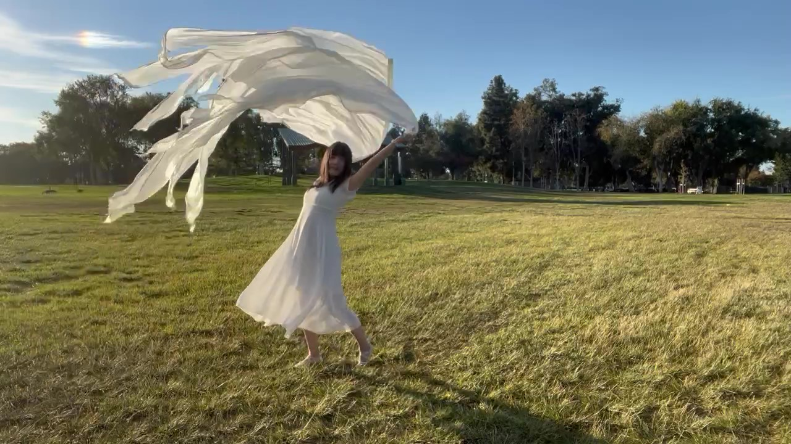
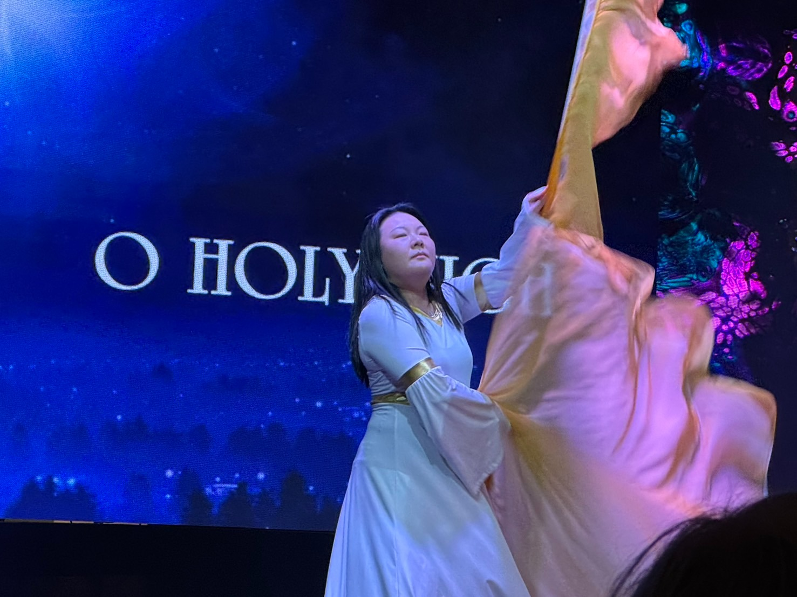
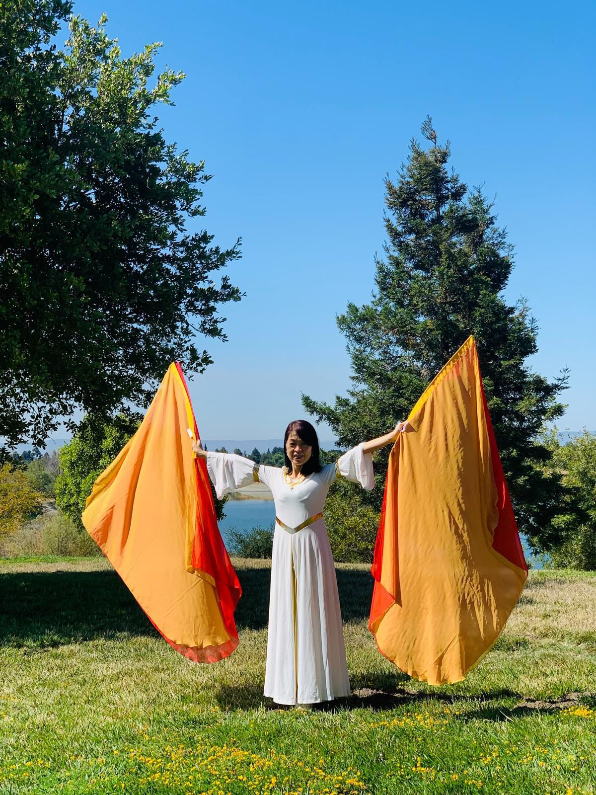
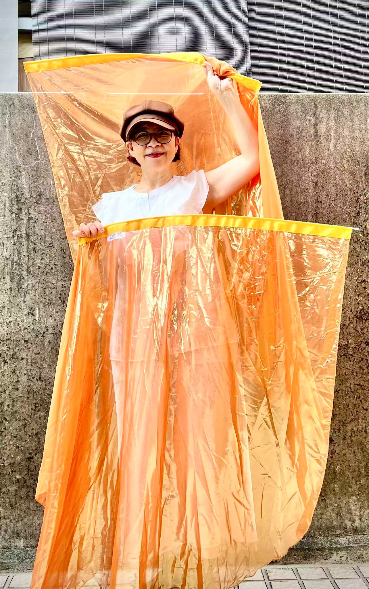

Meet The Team

Clara Tao
Founder & Executive Director
Clara is the Founder and Executive Director of Wings of Shalom. She is passionate about inspiring believers to cultivate a deep, intimate relationship with God and to worship Him with creativity, beauty, and freedom. Through Wings of Shalom, Clara equips and encourages Christians to become vessels of God's love, stepping boldly into the fullness of their calling and impacting the world for His glory.

Lucie Lv
Course Support Lead & Introductory Class Instructor

Stella Xie
Course Communication Coordinator & Introductory Class Instructor

Leeching Lin
Prayer Group Coordinator